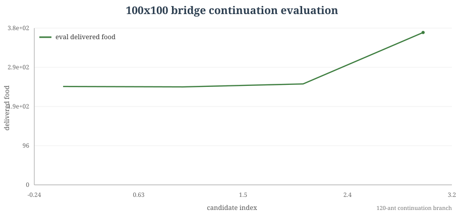
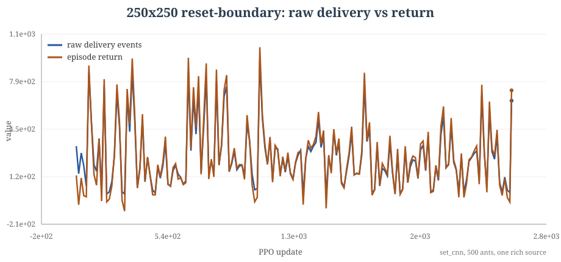

Project Overview
Cool Antz is a multi-agent reinforcement learning project about cooperative foraging. A colony of ants moves in a gridworld, finds food sources, carries food back to a hub, and can write discrete byte values into the map. The research question is: what makes reliable delivery behavior emerge, and when does the external byte grid become useful memory for the colony?
Each ant sees a small facing-aware patch and chooses movement plus a write value. The deployed policy is local.
MAPPO trains with centralized critics, so critic architecture is part of the experiment design.
Success means completing source-to-hub delivery loops, measured by delivered food and success rate.
How this page is ordered
The development became understandable in layers rather than as a simple march from small maps to large maps. This page follows that reasoning order: first the task definition, then the learning bottlenecks, then the interventions that changed behavior, and finally the frontier results and remaining ablations.
- Define the task. Delivery from depleting food sources is the objective.
- Make sparse foraging learnable. Distance shaping, ant coverage, and sampled deployment unlock 25x25.
- Test what changed behavior. Bit count, ant count, source geometry, and critic architecture are separated in the narrative.
- Scale carefully. 50x50, 100x100, and 250x250 are shown with their exact contracts, plots, and videos.
- State what the evidence supports. Byte memory is a research hypothesis; the page names the ablations that would turn it into a causal claim.
4 ants with distance shaping reach 23/23 delivered under sampled movement.
60 ants, 125 food, 2 sources, 8 bits, strided CNN critic: 123.906/125.
Shaped return and byte activity can rise while objective delivery is still zero.
Development Map
Each chapter below has the same structure: what we tried, what the result was, what we concluded, and which plot or video supports it. The labels separate task geometry, render resolution, checkpoint lineage, and evaluation contract.
Task Contract: Delivery Is the Objective
The first major boundary in the repo is semantic. Food is an
integer grid: food_count is total deliverable bites
and food_sources is the number of depleted source
cells that share those bites. The score that matters is delivery
back to the hub.
Experiment Design
The environment lets each ant choose movement and a write value:
MultiDiscrete([5, 2^B] * N)During deployment the actor is local. During MAPPO training, the critic is centralized. That means critic architecture affects learning even when the final policy still sees only local food, ant count, byte bits, hub, border, identity, carrying, and facing features.
Result
The report-safe contract is delivery-only foraging with depleting
sources. A result such as 23/23 means all 23 bites
were delivered after being discovered, picked up, and returned.
Conclusion
Earlier pickup-heavy runs become background context. Every later claim states food count, source count, ant count, write bits, critic family, evaluation mode, and whether the metric is raw delivery or shaped return.
Small Maps Revealed the Bottleneck
Early JAX MAPPO policies could move and sometimes find food, but one ant struggled to close the long source-to-hub loop as the map grew.

Experiment Design
The early families swept communication bits from 2 to 8 and then swept ant count over 2, 3, 4, 6, and 8 ants on 25x25 with 3 write bits. These comparisons came before the final held-out evaluation gates and served as a diagnosis step.
Result
On the 25x25 anchor, 2, 3, 5, and 8 bits stayed near
0.31 to 0.44 env return. The ant-count
sweep climbed from 4.8125 env return with 2 ants to
10.875 with 8 ants.
Conclusion
The first bottleneck was coverage and credit. More agents made the sparse delivery process easier to learn than a larger byte alphabet did.
The 25x25 Unlock: Coverage Plus Distance Shaping
The first clean behavioral success is the 25x25 distance-shaped line. It is also where sampled deployment becomes impossible to ignore.

DISTANCE_CAP4 23/23 result below is a separate
evaluation row with a 6-source task contract.
| Run | Setup | Greedy result | Sampled result | Conclusion |
|---|---|---|---|---|
DISTANCE_SHAPE |
25x25, 1 ant, 23 food, 6 sources, 1 bit, radius 1, MLP critic | 13.75/23, success 0 | 7/23, success 0 | Distance shaping helps, and the one-ant setup still lacks coverage. |
DISTANCE_CAP4 |
25x25, 4 ants, 23 food, 6 sources, 1 bit, radius 1, larger hidden size | 2.75/23, success 0 | 23/23, success 1.0 | Coverage plus stochastic deployment unlocks the task. |
DISTANCE_CAP4_NO_WRITE |
25x25, 4 ants, 23 food, 6 sources, no writing, same sampled-style family | 0/23, success 0 | 22/23, success 0.5 | 25x25 success points first to coverage and stochastic deployment. |
Bytes Became a Hypothesis to Test
The byte grid is real and the actors can write to it. The next question is whether those written values cause better foraging decisions, or simply mark activity along the way.

Experiment Design
Two pressures were tested early: more possible byte values and more ants. The communication-bit family changed write bits, while the ant-count curriculum held 3 bits and increased team size.
Result
The bit sweep produced no clear scale jump. The ant-count
curriculum gave the clearer signal. In the 25x25 3-bit stage,
final training env return rose through 4.8125, 6.8125,
7.8125, 9.9375, and 10.875.
Conclusion
The interpretation is coverage first, communication as the next causal question. The byte hypothesis calls for matched no-write, byte-shuffle, and no-byte-read ablations.
Rare 50x50 Exposed the Discovery Problem
When food is rare, the agent has to discover sparse sources and then sustain return loops. That is a different problem from polishing a known dense layout.

Result
The rare 50x50 base delivered 10.958/23. A hub
vector reached 12.328/23. Hub plus food vector
reached 15.203/23, and held-out selection reached
16.198/23.
Conclusion
Discovery aids helped. This supports an exploration interpretation: sparse layouts need reliable source discovery before byte-memory claims become meaningful.
The 50x50 Causal Boundary Is the Critic
The 50x50 branch changed more than team size and write bits. It
moved from a flat MLP centralized critic to a spatial
strided_cnn critic.

Experiment Design
The efficient 50x50 continuation used an MLP critic on a 4-ant,
48-food, 12-source setup. The proximity/full-layout family moved
to strided_cnn, then added dense source geometry,
half-food full layout, shared writes, write cost, 8 bits, and
larger ant teams.
Result
The MLP branch delivered 21.5/48. The 8-ant
write-cost spatial-critic branch delivered 69.375/125.
The later 60-ant confirmed branch delivered 123.906/125.
Conclusion
The spatial critic changed value learning. The report keeps this critic boundary visible alongside source layout, write bits, and ant count.
The 60-Ant Frontier and What Changed With It
This is the strongest behavior result in the current site. The point of this section is to show the result and name the changes that arrived with it.
123.906/125 over 64 eval episodes.
Experiment Design
The checkpoint used by the live sandbox is
best_full_layout_proximity_60ants_half_food_shared_writes_write_cost_8bits_stabilized.pkl.
Its exported contract is 50x50, 60 ants, 125 food, 2 sources,
8 write bits, actor radius 2, repeated 8-way identity features,
write_while_moving=true, and strided_cnn
critic lineage.
Result
The 64-episode confirmation reports 123.90625/125,
success 0.90625, and write nonzero rate
0.998.
Conclusion
This supports a strong behavior-engineering claim. The causal byte-memory question remains a follow-up because ant count, 8 bits, identity, selected continuation, temperature, spatial critic, and saturated writes all move together.
Large-Scale Branches: Progress, Selection, and Diagnostics
The 100x100 bridge and 250x250 reset branches answer narrower scale-up questions: how far selected continuations can go, and how raw delivery separates from shaped activity.


fixed8-reset-boundary256. This is the local
diagnostic branch; the next video is the separate 1000x1000
bigmap render.

| Branch | Evaluation contract | Result | What it means |
|---|---|---|---|
| 100x100 hard bridge | 120 ants, 375 food, 6 sources, continuation branch | 372/375, success 0.625 over 24 eval episodes | Strong continuation result, still temperature and selection sensitive. |
| 250x250 source teacher | 500 ants, 5000 food, 1 source, set CNN diagnostic family | Positive shaping with zero delivery in the diagnosis row | Raw delivery metrics keep the shaped signal interpretable. |
| 250x250 reset boundary | 500 ants, 5000 food, 1 source, reset/distance branch | 654 final deliveries, 869 pickups; best train around 1003 deliveries | Real local progress inside the reset/distance branch. |
Interactive Sandbox: Actual 50x50 Policy
This runner uses exported actor weights from the actual trained 50x50 frontier checkpoint for this map size.
Source checkpoint:
runs/notebooks/fl50_60ants_half_food_sw_wc_8bits_stabilize_from_60best/checkpoints/best_full_layout_proximity_60ants_half_food_shared_writes_write_cost_8bits_stabilized.pkl.
Click the grid to place the colony or food sources, then run the
policy in the browser.
Artifact Viewer
Selecting an artifact changes the rollout video and the audited provenance beside it. When the evaluation task and render grid differ, they are listed separately.
50x50 frontier policy
60-ant 50x50 checkpoint, rendered from the actual policy.
Reasoning Transparency
The strongest version of this project is careful about what is supported by the current evidence, what changed together, and what should be run next.
| Claim | Status | Evidence | Remaining risk |
|---|---|---|---|
| 25x25 reaches full delivery under sampled movement. | Strong | DISTANCE_CAP4: 23/23, success 1.0. |
Greedy deployment remains much weaker. |
| Ant coverage mattered more than bit count early. | Strong for the observed runs | Ant-count return rises monotonically; bit sweep gives little 25x25 movement. | A full factorial ablation would make this sharper. |
| The 50x50 frontier is a spatial-critic branch. | Strong | MLP branch and strided_cnn branch are separate in configs and results. |
Later gains combine many interventions. |
| Bytes cause the best policies. | Open | Writes exist and often saturate; no-write evidence remains mixed. | Need matched no-write, byte-shuffle, no-byte-read, and cost-matched bit ablations. |
| 250x250 general foraging is complete. | Open | Reset-boundary gets real local delivery progress. | General task remains diagnostic and shaped return can mislead. |
BibTeX-style citation
@misc{figo2026coolantz,
title = {Cool Antz: Multi-Agent Foraging With External Memory},
author = {Figueiredo Paschmann, Jeremías and Nattero, Francisco and Kaplan, Juan},
year = {2026},
note = {Reinforcement learning project report and local experiment chronology}
}